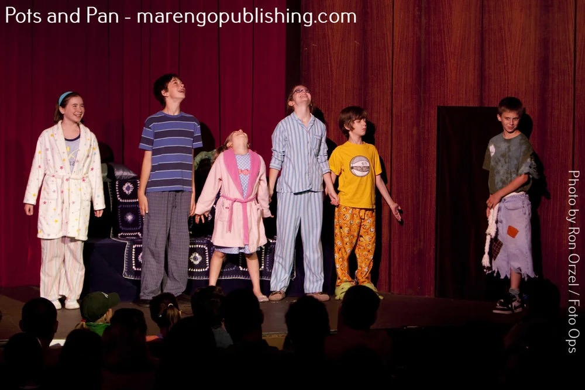

Becky Thatcher
Mark Twain's Hannibal, MO reimagined from Becky's perspective
By two-time Richard Rodgers Award winner Dave Hudson
4th grade and up
25+ roles
80 min
$299
Ages4th grade and up
Cast25+ roles
Runtime80 min + intermission
Songs16
LevelIntermediate
License$299
About the Show
A stage adaptation of Mark Twain's classic, reimagined from Becky Thatcher's perspective. Features familiar adventures like the whitewash scene while centering the girls of Hannibal, Missouri. With more female roles than male and flexible gender-switching, Becky Thatcher is a fresh take on an American classic — Tom Sawyer with none of the controversy and all of the adventure.
Why This Works for Young Performers
Flexible casting 25 speaking roles plus flexible chorus. More female roles than male; gender can be switched for many parts.
Curriculum-ready source material Based on The Adventures of Tom Sawyer by Mark Twain — connects naturally to classroom learning.
Right level of challenge Appropriate for programs with some musical theater experience.
Built-in intermission Gives young performers and audiences a natural break.
Curriculum Connections
Pair this show with classroom learning:
- Language Arts — Mark Twain, literary adaptation
- American History — 19th century Missouri
- Social Studies — gender roles and perspectives
Details
| Book & Lyrics | Dave Hudson |
|---|
| Music | Mark Sutton-Smith |
|---|
| Based On | The Adventures of Tom Sawyer by Mark Twain |
|---|
Your Production Kit
- ✓ Complete script (printable PDF — unlimited copies for your cast)
- ✓ Piano/vocal score
- ✓ Vocal lead sheets for every song
- ✓ Backing tracks for rehearsal and performance
- ✓ Video recording and YouTube rights included
- ✓ No script rentals. No returns. You keep everything.
Frequently Asked Questions
- How is this different from other Tom Sawyer musicals?
- Becky Thatcher tells the story from Becky's perspective, centering the female characters. It's a fresh take on familiar material with more roles for girls — and none of the controversial elements that make some Twain adaptations difficult for schools.
- Can boys play in this show?
- Absolutely. There are strong male roles including Tom Sawyer, Huck Finn, and others. The show leans female but gender can be switched for many parts.
- Do I need live musicians?
- No. Complete backing tracks are included. A piano/vocal score is also provided if you have a pianist.
- Is this appropriate for elementary students?
- Yes, for 4th grade and up. The themes of friendship, adventure, and standing up for yourself resonate with upper elementary and middle school students.
- Can I adjust the cast size?
- The 25 speaking roles are designed into the script, but the flexible chorus lets you include as many additional students as you need.
Production Photos
Photos by Ron Orzel / Foto Ops
Read the Script Free
Tell us your name and organization. We'll send the full script within 24 hours — no commitment, no credit card.
Request Free Perusal
You Might Also Like

Just So Beginner Friendly
Rudyard Kipling's beloved stories brought to life on stage
Music by Leah Okimoto
- Ages
- 3rd grade and up
- Cast
- 25+ roles
- Runtime
- 70 min + int.
- Level
- Beginner Friendly
animals
folklore
storytelling
Kipling

The next chapter in the story of the boy who refuses to grow up
Music by Leah Okimoto
Peter Pan
adventure
growing up
imagination